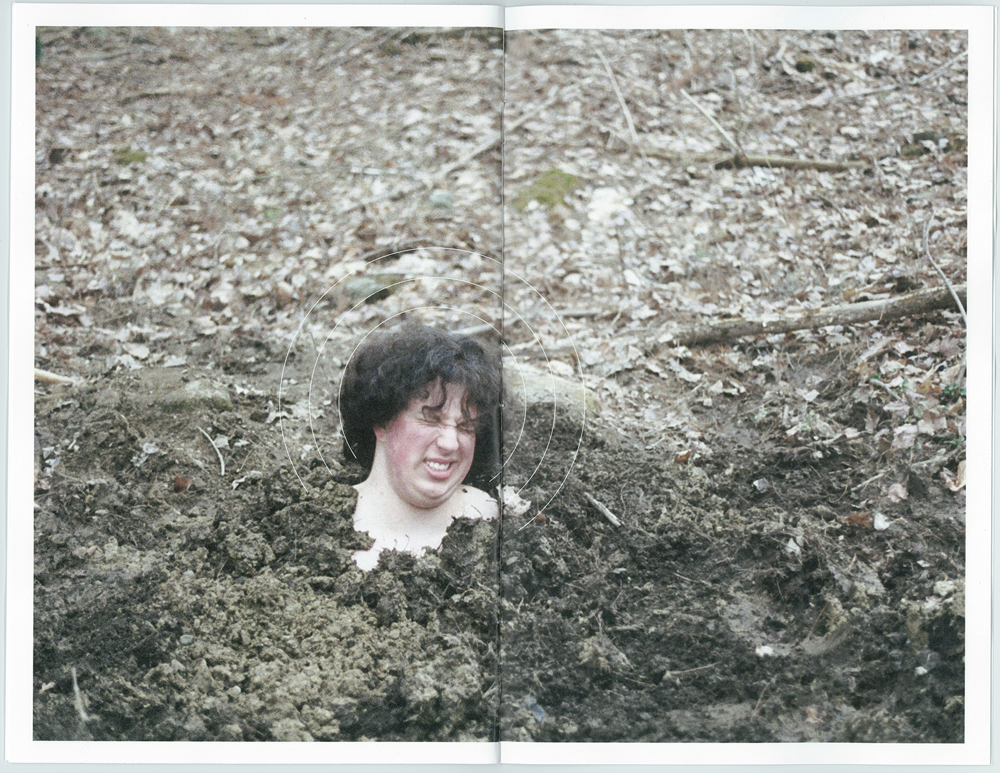

my little home on the tildeverse, somewhere to put what i'm thinking. i want somewhere to throw my thoughts of my own making. i don't know how often this will be updated, but i do want to try to keep something here. we'll see. ☼
arplo, they/them, for now, art student, graphic designer/printmaker/web enthusiast, eternally searching for new music, listens to too much of it, in a way that means they rarely settle on a "favorite" anything, loves harsher stuff, isn't cool enough to participate in the culture, would like to be invited to more parties, thinks that going to a rave would be pretty cool, was given access to the internet far too early, watched pbs a lot as a kid, loves big dogs, is horribly allergic to dogs but wishes to own one one day, loves aquariums, loves trains, loves bread, loves making things, wishes they could pursue crafts more seriously, often yearns for the isolation of joining a religious order but knows they'll never do it, wants to be outside more than they are able to, wishes they were more competent at being outside more than they are, currently lives in a city, hates living in a city, would like to return to a rural area permanently at the first given chance, interested in conceptual and metaphorical art in relation to the rural areas that they grew up in, is often nostalgic for things that they've never experienced, dreams of a day when they can settle down and feel okay, loves the actual objects of books, doesn't often read books, believes fervently in communism, very bad at following through, laughs a lot, but often experiences dramatic mood swings, is working on themselves, shoots film, should probably go back to therapy at some point, surrounds themselves with people they get too attached to, is a half decent driver, is no fun at parties, gets far too invested in passing interests, very good at following directions, never feels like they've done enough, will make it through this, they promise you.
